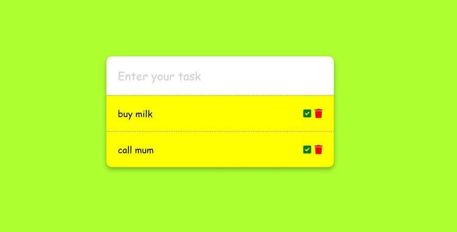

Our project aims to create a real-time character counter using JavaScript. It features a text area container that displays both the total character count and remaining character count of 50. As users type, the total character count dynamically increases, and the remaining character count decreases. The text area locks once the limit of 50 characters is reached, and the remaining character count becomes zero. With this functionality, users can keep track of their remaining characters and be alerted when they hit the character limit.
Real-time Character Counter Project Live Demo (Preview)
Real-time Character Counter Project Live Demo (Preview) Source Code (Github)
note-taking Project
Project description
This project involves creating a note-taking app with a sleek and modern button design. Upon clicking the button, a new note can be created and edited as needed. Double-clicking a note prompts the user to confirm deletion, and notes are saved via browser local storage to persist even after page refresh. This project covers saving and retrieving notes using JavaScript and designing a stylish and modern glassy interface with CSS.
Note Taking App Project Live Demo (Preview)
Note Taking App Project Source Code (Github)
Recipe Book App Project
Project description
In this project, we're developing a recipe book application that features a variety of recipes obtained through a free recipe API. We need an API key to access this API. Each time the page is refreshed, a new set of recipes with distinct ingredients will be displayed. Additionally, a link is provided to access the recipe website.
Recipe Book App Project Live Demo (Preview)
Recipe Book App Project Source Code (Github)
dice roll simulator
Project description
Welcome to the Dice Roll Simulator project. The final version of the project features a dice at the center of the screen and a "Roll dice" button. The button triggers an animation and generates a random number, which is displayed in the center of the dice when clicked, t. Additionally, the number is added to a history list. To achieve this, we used modern CSS to style the dice and added a JavaScript event listener to the button. The listener generates a random number, saves it to an array, and updates the history list.
Dice Roll Simulator Project Live Demo (Preview)
dice roll simulatorProject Source Code (Github)
create a rock, paper, and scissors game
Project description
In this project, we create a rock, paper, and scissors game. The computer will also choose a random option, and the results will be displayed. You can win, lose, or tie. Scores are tracked at the bottom. We'll use HTML for structure, CSS for a modern look, and JavaScript to generate the computer's choice and compare the results. This game is an interactive way to test your luck and strategy against a computer opponent.
Rock Paper Scissors Game Project Live Demo (Preview)
Recipe Book App Project Source Code (Github)
Age Calculator Project
Project description
In this project, we are going to create an age calculator. As you can see from the final version of the project, we have a container here with the title age calculator with an input of a date. If we click on the date input, we can choose the date of our birthday. For example, if we choose a date in in 2022 and if we click now on Calculate Age, you can see the age is calculated based on this date and saying your age is 21 years old.
Age Calculator Project Live Demo (Preview)
Age Calculator Project Source Code (Github)

To do List Project
Project description
In this project, we create a modern to do list. We can add a new task to the list using the input field. Plus, our to-do list is unique in that even after refreshing the page, the tasks remain saved. By utilizing JavaScript, we'll show you how to set and get items from local storage. With each task, there are two icons: a check mark and a trash bin. The check mark allows you to mark the task as completed, while the trash bin lets you delete the task. Each task will also be saved in the local storage.
To do List Project Live Demo (Preview)
To do List Project Source Code (Github)
Weight Converter Project
Project description
Let's create a weight converter project that converts pounds to kilograms. The webpage features an input field where users can enter a weight in pounds, and the webpage automatically displays the equivalent weight in kilograms. After 10 seconds, the result is removed, and the input field is emptied using the 'set time out' method. We've also incorporated an error handling feature to handle negative input numbers. If the user enters a negative number, the webpage displays an error message, "Please enter a valid number." We'll learn how to handle error situations and remove the error message after two seconds using an event listener for the input field. The event listener will call a function that performs the desired actions.
Weight Converter Project Live Demo (Preview)
Weight Converter Project Source Code (Github)
Tip Calculator Project
Project description
In this project, our aim is to build a modern tip calculator. The project's primary interface comprises a container labeled "Tip Calculator" with two input fields: one for the bill amount and the other for the tip percentage. The tip calculator has a modern design that is styled using CSS. We utilized JavaScript to obtain the values of the two input fields and calculate the total amount based on these values.